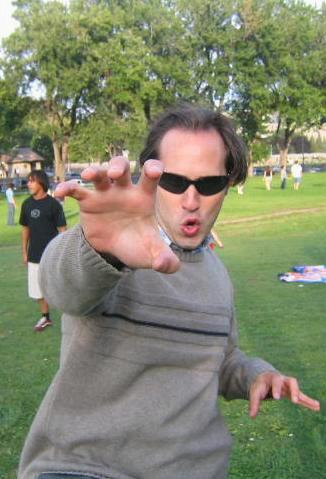

Ph.D., University of California, Berkeley
I received my Ph.D. at the University of California at Berkeley. I am an algebraist with interests spanning a broad range of areas, including semigroups, geometric group theory, representation theory, self-similar groups (also known as automaton groups), profinite groups, and random walks on semigroups and groups.
I have been particularly drawn to interactions between these areas and Computer Science, and I am especially fond of algorithmic questions. I have also explored operator algebras associated to étale groupoids and inverse semigroups. Currently, I am focused on applications of finite semigroup theory to finite state Markov chains.
My research touches on a wide spectrum of algebraic and combinatorial structures, with an eye toward computational and algorithmic applications.